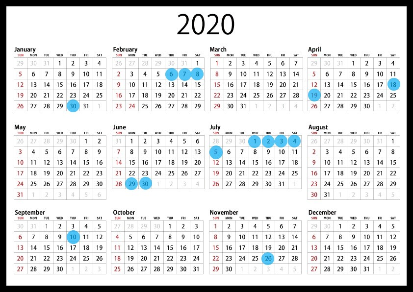

Nuestro día a día
Tuvimos el gusto de poder estar presentes en el maravilloso salón de Ginebra donde nos pudieron deleitar con estas tres preparaciones de uno clásicos entre los clásicos. La verdad es que fue increíble la experiencia y pudimos hacer bastantes contactos del mundillo.
Aqui os dejamos el enlace: https://www.youtube.com/watch?v=ZkSclaVvK6s
El pasado mes de enero nos invitaron a la presentación de dos de los nuevos coches de Alfa Romeo, en este video podemos observar la presentación de dichos coches, es un proyecto el cual saldrá dentro de muy poco, a finales de año. Además, una vez terminada la presentación tuvimos la oportunidad de probarlos durante un par de minutos. Desde nuestro punto de vista, es un proyecto muy ambicioso, esperamos y sabemos que tendrá bastante éxito, pero hasta finales de año no podremos saberlo definitivamente.
Aquí os dejamos el enlace:https://youtu.be/JTpVkjQ4lLk
En este video enseñamos un poco lo ocurrido en Ourense, el equipo de WithoutBrakes tuvimos la posibilidad de asistir a este evento gracias a Volkswagen que nos invitó. Mayoritariamente casi todos los coches que nos podíamos encontrar ya habían salido a la venta y eran incluso algunos de ellos bastante antiguos, no por ello significa que fuese peor ni mejor, ya que pudimos rememorar aquella época de oro que tuvo Volkswagen. Por último, también pudimos disfrutar de algunos de los coches más novedosos.
Aquí os dejamos el enlace:https://youtu.be/kv11Y0wJTo0
Recientemente pudimos asistir al evento Goodwood Festival of Speed, al comienzo del evento nos hicieron una pequeña presentación sobre lo que íbamos a poder ver, y a su vez agradeciendo a las distintas marcas por su colaboración. En este video, os enseñamos algunos de los momentos más destacados del circuito que realizaron los distintos tipos de coches, desde coches estándar hasta fórmula 1.
Aquí os dejamos el enlace:https://youtu.be/OXzuVvxhwNk
Gracias a Toyota pudimos disfrutar de un fin de semana entero con su nuevo estreno, aprovechamos esta oportunidad que nos ofrecieron y os traemos un nuevo video en cual repasaremos algunos de los elementos más importantes que contiene el coche.
Aquí os dejamos el enlace:https://youtu.be/w19KhgfpIks